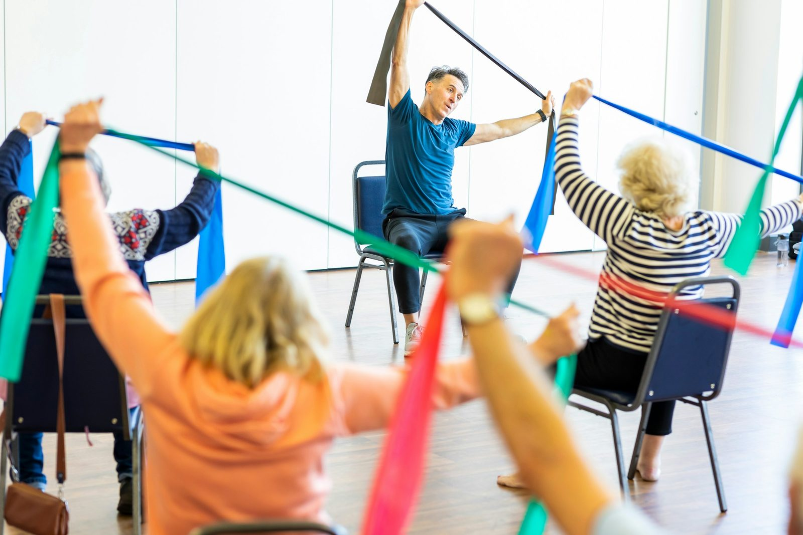
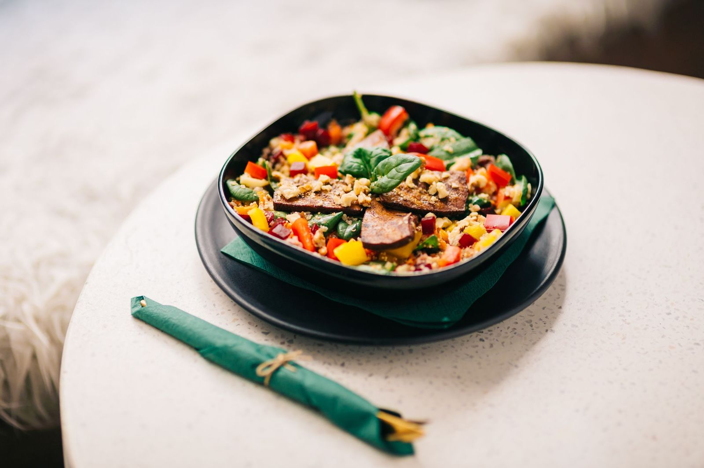

Workout - Strength
Strength Training After 50: Where to Start
A plain-language guide to starting strength training after 50: the basic movements, a simple weekly plan, and how to progress safely.
The Blog
Plain-language guidance from Sanjeev Kumar on strength, mobility and training that fits real life.
Free BMI Calculator - check your adult BMI and age-aware chart, then come back for matching guidance.
Showing: -
No articles in yet. New guidance is added regularly.

Workout - Strength
A plain-language guide to starting strength training after 50: the basic movements, a simple weekly plan, and how to progress safely.

Workout - Body Composition Changes
Weight alone does not tell the whole story. Learn what body composition is, why the scale can stall while you improve, and simple ways to track real progress.

Supplementation - Performance Enhancement
Curious about creatine? Learn what it does, what the research says, who might consider it, and what to check with your doctor first.

Nutrition - Athletic Performance
Fuel your training with simple food timing. See what to eat before, during and after a workout, how much to drink, and a sample day for active people.

Nutrition - Vegan Diet
Training on a vegan diet? See how to get enough protein, iron, calcium and B12, and build simple plant-based meals that support your workouts.

Supplementation - General Health
Not sure if you need vitamin D, B12, iron or a multivitamin? Learn when food is enough, who may benefit from supplements and how to choose safely in Canada.

Workout - Arthritis, Osteoporosis and Sarcopenia
Living with arthritis, osteoporosis or age-related muscle loss? Learn why strength and balance work matter, how to start gently and when to ask your doctor.

Nutrition - Gluten-Free and Lactose-Free Diet
Avoiding gluten or lactose and still training hard? See how to cover protein, carbs, calcium and fibre, read labels and build easy meals.

Supplementation - Recovery
Wondering which supplements help recovery? See why sleep, food and rest come first, what the evidence says about common products, and how to choose safely.

Workout - TRT
On testosterone therapy and wondering how to train? Learn what strength training, food and sleep add, and why every medical decision stays with your doctor.

Workout - GLP-1 (Ozempic)
Using Ozempic or a similar medication? Learn why strength training and protein matter, and how to keep your muscle, energy and routine on track.

Nutrition - Vegetarian Diet
How to get enough protein, iron and other key nutrients on a vegetarian diet while you train, with simple meal ideas and common pitfalls.
Workout - Fat Loss
Skip the crash diets. Learn the simple habits behind sustainable fat loss: protein, strength training, steps, sleep and a realistic pace.
Workout - Prenatal / Postnatal
What current guidelines say about exercise during pregnancy, simple ways to stay active, warning signs to stop, and how to ease back after birth.
Workout - Beginner / Getting Started
New to exercise? A calm, week-by-week plan for your first month of training, with tips on soreness, habits and how to know it is working.
Workout - Stress Management / Healthy Lifestyle
Stiff hips, tight shoulders and a sore neck from desk work? Try these simple movement breaks and a 10-minute mobility routine.